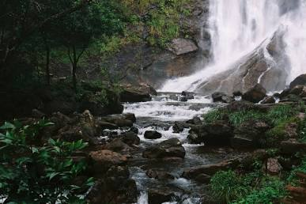
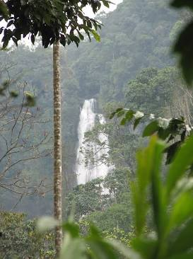
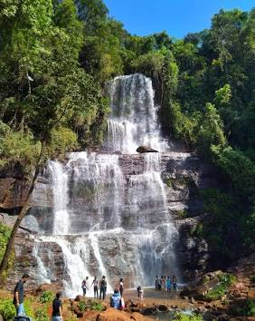
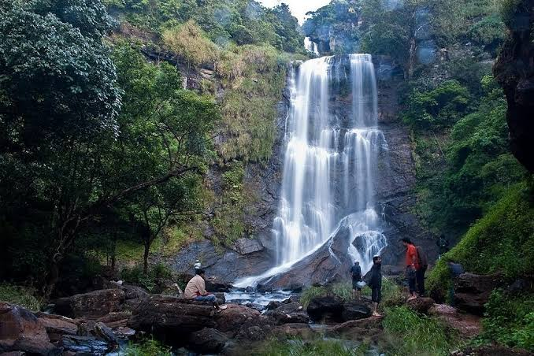
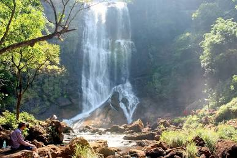

Hebbe Falls
A forest-hidden waterfall where the Bhadra River descends through two dramatic stages — Dodda Hebbe and Chikka Hebbe.
Two drops. One forest story.
Hebbe Falls is a two-stage waterfall in the forested hills around Kemmanagundi. The Bhadra River drops through the landscape to form the larger Dodda Hebbe and smaller Chikka Hebbe.
The waterfall is closely connected with its surrounding forest environment, where steep terrain, seasonal rainfall and streams shape the character of the landscape.
Follow the two-stage descent
Select a section of Hebbe Falls to explore how the cascade changes from one level to another.

Dodda Hebbe
The larger section of the two-stage waterfall, where the Bhadra River makes its major descent through the forested terrain.
From mountain rain to cascade
Seasonal rainfall feeds streams and mountain catchments.
The Bhadra River system carries water through the surrounding landscape.
Water descends through the two-stage waterfall.

FOREST LANDSCAPEThe waterfall belongs to the forest.
Hebbe Falls is surrounded by a landscape of dense forest, steep hills and streams. The vegetation gives the waterfall much of its secluded character.
Read the landscape
Explore the relationship between the waterfall, forest and surrounding mountain environment.
Same falls, different moods

MONSOONMaximum seasonal energy
Rainfall can make the surrounding landscape dramatically greener and increase water flow.
The journey is part of the experience.
Kemmanagundi is the main access point for the Hebbe Falls route.
The final approach passes through a forested mountain landscape.
Karnataka Tourism notes that the final stretch can be covered on foot or by local 4×4 jeeps.
Conditions can change seasonally. Check local access arrangements before travelling, especially during heavy rain.
Find Hebbe in Karnataka
Continue the journey
Select an attraction to explore the surrounding Chikkamagaluru landscape.
Kemmanagundi
A mountain destination known for misty hills, gardens, valleys and access to Hebbe Falls.
Hebbe through different frames

Research & image credits
Information Sources
- Karnataka Tourism — Hebbe Falls
- District Chikkamagaluru, Government of Karnataka
- Karnataka State Tourism Development Corporation resources
- Bhadra Tiger Reserve / forest resources
Image Credits
- Hebbe hero image — add exact licensed source and photographer.
- Cascade image — add exact image source and license.
- Forest image — add exact Wikimedia / photographer / institutional source.
- Trail image — add exact licensed source.
Published descriptions of Hebbe Falls vary in how they express the height. This page uses 168 m based on the current Karnataka Tourism attraction page. Verify the project's final approved figure before publication.